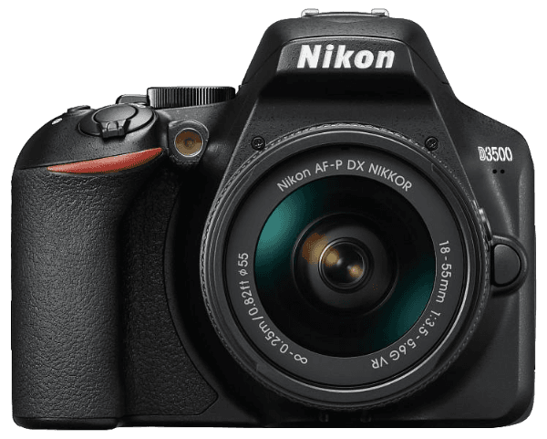
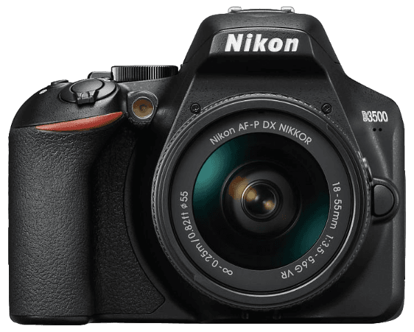

| Márka |
Típus |
Szenzor |
Felbontás |
Kijelző |
Autofókusz |
Fotózási sebesség |
Videó |
 

Az új Canon EOS R10 beállít egy friss mércét az alapfokú fényképezőgépek teljesítményében,
kényelmesen túlszárnyalva a kortárs okostelefonokat. Egy gyors Digic X processzorral
felszerelve, ez a tükör nélküli modell profitál a legújabb automatikus élességállítási
képességekből.
Tesztelés során azt találtuk, hogy az AF követés lenyűgözően intelligens és intuitív kezdők
számára. A 15 kép/mp állított sorozatfelvételi sebességek is pontosnak bizonyultak az R10-el
töltött időnk során. Ezek az képességek együtt azt jelentik, hogy elég gyors ahhoz, hogy
megörökítse a pillanatnyi cselekvéseket, amit nem mondhatunk el minden kezdő fényképezőgépről.
Ráadásul, a könnyű váz még a kezdők számára is kényelmesen ismerős, az articuláló érintőképernyő
pedig hasznos hozzáférést kínál.
A kompakt formátumnak köszönhetően könnyen kezelhető, amikor új technikákat próbál ki, míg a két
vezérlő tárcsa lehetővé teszi a beállítások egyszerű finomhangolását. A testen belüli
képstabilizátor hiánya korlátozza az R10 képességeit a sötétben, de az képminőség elegendő, sok
részlettel a sötétből kihozható. Tehát nem forradalmi modell, de a specifikációi és
vezérlőrendszere az R10-et a kezdők számára az első helyre teszik a mi listánkon. Reméljük, hogy
a Canon több natív APS-C objektívet ad hozzá, hogy még vonzóbbá tegye az ajánlatot.
Ha egy egyszerű, kompakt tükör nélküli fényképezőgépet keresel, ami állandóan vonzó képeket
készít, akkor az OM-D E-M10 Mark IV mindenképpen érdemes helyet kapnia a rövid listádon. Főként
okostelefonról váltók számára tervezték, ergonomikus fogásának, könnyen kezelhető gombok
elrendezésének és praktikus lefelé hajtható érintőképernyőjének köszönhetően sokoldalúságot
nyújt, anélkül hogy túlzsúfolná a klasszikus stílusú burkolatot.
Hiányozhatnak néhány haladóbb jellemzője a drágább versenytársakhoz képest - beleértve a
mikrofon- és USB-C portokat -, de kiválóan teljesít fényképezőgépként. Valójában azt találtuk,
hogy ez a legfotócentrikusabb fényképezőgép a kategóriájában, kiváló képeket készített
tesztjeink során.
Az Advanced Photo mód segítségével könnyen kipróbálhatod a haladó technikákat, például hosszú
expozíciókat, míg az a testben lévő képstabilizáló rendszer - a csúcsmodell E-M1-ből kölcsönzött
- kiváló. A szenzor felbontása 20,3 MP, és mivel ez egy Micro Four Thirds fényképezőgép,
rendelkezik a piac egyik legszélesebb objektív kínálatával. Talán nem fogja megragadni a
címeket, de a Mark IV fantasztikus első fényképezőgép a kezdők számára.
A Fujifilm X-T30 már önmagában is csábító középkategóriás választás volt a fotózás iránt
érdeklődők számára, de ez a második kiadás néhány fejlesztéssel egészíti ki az ajánlatot. Ezeket
a finomhangolásokat első pillantásra nem láthatod: az X-T30 II ugyanazt a vázat és retró külsőt
használja, mint elődje, ami nem rossz dolog. Ez egy vonzó dizájn, amellyel a kezdők könnyen
megbirkózhatnak. Az érintőképernyő továbbra is csak dönthető, de kicsit élesebb, mint
korábban.
A tesztelés során azt találtuk, hogy az X-T30 nem változtatja meg az első verzió
teljesítményképletét. Ugyanazt az APS-C szenzort és 425 pontos AF-rendszert használja, így
továbbra is egyensúlyba hozza a kiváló fényképezési készségeket a kompakt arányokkal.
Azonban egy új algoritmus nagyobb pontossággal követi a mozgó alanyokat. Bár nem tökéletes, úgy
gondoljuk, hogy jól teljesít, amikor kiszámítható alanyokra zár. A fókuszpontok érzékenysége is
javult, és azt tapasztaltuk, hogy az X-T30 II jól teljesít a részletek kiemelésében még alacsony
fényviszonyok között is.
Nem érdemes frissíteni az eredetiről, de az első alkalommal vásárlók számára az X-T30 II képes
minden területen megállni a helyét, és segíti a fotózási készségek fejlődését.
A Sony ZV-E10 egy nagy teljesítményű vlogging eszköz kompakt arányokkal, egy fantasztikus
videóra fókuszáló hibrid a kezdő tartalomkészítők számára. Könnyű és zsebbarát, és akkor működik
a legjobban, ha a Sony számos kompakt objektívje egyikével párosítja.
A tesztelés során azt találtuk, hogy 24,2 MP-es APS-C érzékelője éles 4K felvételeket és
lenyűgözően részletgazdag állóképeket készít, a gyors, 425 pontos autofókusz rendszernek
köszönhetően. A vakupapucs-rögzítés és az audioportok örvendetes sokoldalúságot kínálnak a
fényképezési beállítások bővítéséhez is.
Az érintésre optimalizált menürendszer felhasználóbarátabbá tenné a Sony ZV-E10-et, a kereső
hiánya pedig korlátot jelent a fotósok számára. Ennek ellenére csuklós érintőképernyője továbbra
is hasznos kiegészítő a menet közbeni keretezéshez, a kamera fizikai kezelőfelülete pedig kézben
is elérhető.
Áttekintésünk néhány hátrányt tárt fel a kezdők számára. Pásztázáskor van némi redőny, és a 4K
felvétel 30p-nél tetőzik. Ám bár nem tökéletes fényképezőgépről van szó, a nagyvonalú
funkciókészlet – beleértve a plug-and-play számítógépes csatlakozást az élő közvetítéshez – a
ZV-E10-et lenyűgöző választássá teszi a videózás iránt érdeklődő tanulók számára.
Ha kezdő vagy, aki hosszú távú fényképezőgépet keres, úgy gondoljuk, hogy a Fujifilm X-S20
fantasztikus választás. Ez a legdrágább fényképezőgép ebben az útmutatóban, és jelentős felár az
X-S10-hez képest, amely ugyanazt a fényképminőséget, valamint ugyanazt a kezdőbarát kialakítást
és kezelést kínálja: az egyszerűsített tárcsák megkönnyítik az X-S20 kezelését a tanulók
számára, miközben elegendő kézi vezérlést biztosít. irányítani, hogy fenntartsa érdeklődését
kreativitásának és készségeinek növekedésével. Azonban az X-S20 sokkal jobb videóteljesítmény és
akkumulátor-élettartam.
Azt is gondoljuk, hogy a továbbfejlesztett automatikus fényképezési mód nagyszerű szolgáltatás a
kezdők számára. Automatikusan felismeri és követi a témákat, valamint kiválasztja a
jelenetbeállításokat a fényképezés alapján. A gyakorlatban ez extra erőfeszítés nélkül élénkebbé
tette a képeket. A Fujifilm bevált 26,1 MP X-Trans CMOS 4 érzékelőjének köszönhetően a
képminőség megbízhatóan jó. Ha videózást is tervez, a 6K/30p 4:2:2 10 bites felvétel nem fog
visszatartani.
Áttekintésünkben azt kívántuk, bárcsak a Fujifilm időjárásálló lett volna az X-S20-on. És nem
lehet elkerülni, hogy ez jelentős ráfordítást jelent az alkalmi tartalomkészítők számára. De az
olyan funkciók, mint a testbe épített képstabilizátor és a dedikált vlog mód egyszerű
előbeállításokkal, az X-S20-at egy nagyon alkalmas első hibridté teszik.
Lényegében a Nikon Z fc ugyanaz, mint a Nikon Z50. Ez jó hír, mert 20,9 MP-es APS-C érzékelője
és hibrid autofókusz rendszere 30 képkocka/mp sebességgel részletgazdag állóképek és masszív 4K
felvételek készítésére képes. A Z fc-t a karosszéria különbözteti meg, amelyet a klasszikus
Nikon FM2 tiszteletére terveztek. Méretei nagyjából megegyeznek analóg ősével, és nincs hiány a
nyolcvanas évekbeli eredetéhez illő retro stílusban.
Ezek az átgondolt visszajelzések azt jelentik, hogy a Nikon Z fc egy jellegzetes fényképezőgép.
Kezdőknek is jobb, mint a Z50, köszönhetően a változtatható szögű kijelzőnek, amely rugalmasabbá
teszi a kreatív keretezést. Nem ellenáll az időjárásnak (nem mintha meg akarná kockáztatni, hogy
ilyen lenyűgöző kamerát használjon rossz időben), és hiányzik belőle a Z50 mély markolata
is.
Ha rendszeresen babrál az expozíciós beállításokkal, azt találtuk, hogy a dedikált expozíciós
tárcsák intuitívabb módszer, mint az általános parancstárcsák, ha már rájöttél. Az ISO, a
zársebesség és az expozíciókompenzáció dedikált tárcsája is remekül néz ki – ez az, ami korábban
is megkülönböztette a Fujifilmet. A natív objektívek objektívvezérlő gyűrűt is kínálnak, amely
testreszabható a fókusz és a rekesznyílás között. Ha ezt kombinálja a Z fc automatikus ISO-jával
és zársebesség-szabályozásával, akkor pillanatok alatt indulhat a fényképezési stílusához
igazodva.
A Nikon D3500 az egyetlen DSLR a listán. Miért? Nos, ezeket a kamerákat – amelyek optikai
keresőjükkel különböznek a tükör nélküli vetélytársaktól – a vezető kameragyártók közül sokan
lassan kivonják a forgalomból, a fejlettebb tükör nélküli modellek javára. De ha a fotózás a fő
tevékenysége, és a videó specifikációi valóban nem fontosak, a Nikon D3500 fantasztikus,
alacsony költségvetésű kezdő fényképezőgép-választás. A kiváló minőségű 24,2 MP-es APS-C
érzékelővel ellátott D3500 részletes, tónusban gazdag képeket készít.
Első ránézésre kevésnek tűnik a funkciókban, de a Nikon D3500 rendelkezik egy rendkívül
praktikus, dedikált útmutató móddal, amely a tárcsán található. A Guide Mode, egy alapvető
virtuális fényképezési oktató, a tesztelés során értékes funkciónak bizonyult a kezdők számára.
Ha nagyon érzékeny, bízzon benne, hogy végigvezeti a fényképezőgép összes funkcióján, beleértve
a fényképezőgépen belüli képszerkesztést is. Testre szabható úgy, hogy teljes körű segítséget
nyújtson, vagy fejlettebb irányítást tesz lehetővé, ahogy egyre nő a bizalom és a
tapasztalat.
A D3500-hoz két kit-objektív áll rendelkezésre, de javasoljuk, hogy a DX 18-55 VR kitobjektívet
válassza. A VR a Vibration Reduction rövidítése, és töredékével többe kerül, mint a másik
lehetőség. De ha a VR-stabilizálás engedélyezve van, jobb kézi felvételeket készíthet, különösen
gyenge fényviszonyok között.
Ha inkább egy kompakt fényképezőgépen, inkább egy nagyobb tükör nélküli modellen vagy DSLR-en
szeretné elsajátítani a fotózást, akkor a Lumix ZS200 (vagy az Egyesült Államokon kívül ismert
TZ200) a legjobb választás. A teszt során szépen részletgazdag felvételeket készített, amelyek
nem csak természetes, de fényes és élénk megjelenésűek, de nagyon jól megállják a helyüket a
nagyobb szenzorokat élvező fényképezőgépekkel szemben is.
Úgy nézhet ki, mint egy célzás és lövés kamera, de a ZS200 egy rendkívül sokoldalú objektívet
(24-360 mm-es gyújtótávolsággal), 1 hüvelykes érzékelőt és kézi vezérlések széles skáláját
kombinálja a teljes kreatív irányítás érdekében. Az objektív tetején és a henger körül található
vezérlőtárcsáknak köszönhetően gyorsan beállíthatja az olyan beállításokat, mint a rekesznyílás
vagy a zársebesség, miközben kint van az utcán.
És bár az elektronikus kereső kicsi lehet, szilárd, 2,33 millió képpontos felbontást kínál, és
egy másik nagy áldás a telefonkamerákhoz képest. Használja a 4K-s videót és az intuitív
érintőképernyős felületet, és a ZS200 remek kezdő kamera azok számára, akik kicsi és diszkrét
dolgokban kézi vezérlést végeznek.